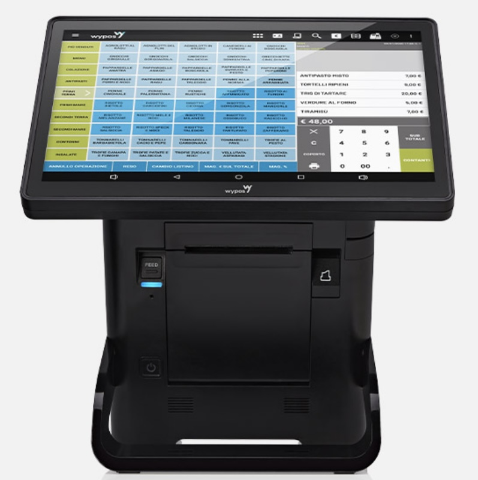

WYCASH 2600

Soluzione di cassa elegante e contemporanea.
Wycash 2600 è potente e versatile: gestisci il tuo negozio con semplicità. Display touch 15,6” full HD super brillante.
WYCASH 1300

Punto cassa touch screen con stampante telematica integrata
Per i negozi, le attività di ristorazione e le tabaccherie Wycash 1300 è il sistema di cassa compatto e flessibile che garantisce la gestione integrata del punto vendita. Attraverso l’interfaccia touch screen, facile e intuitiva, puoi organizzare nel modo migliore il lavoro di tutti i giorni.